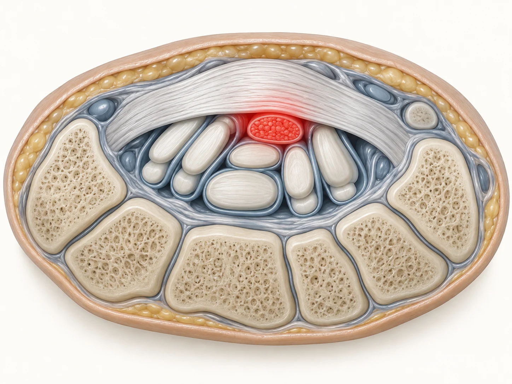
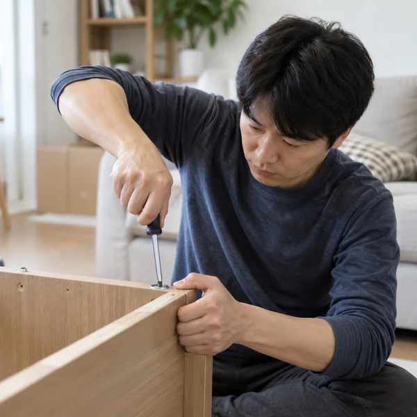
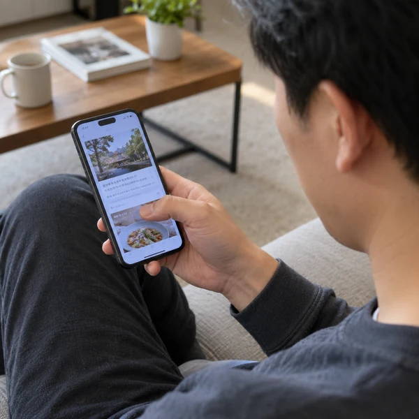
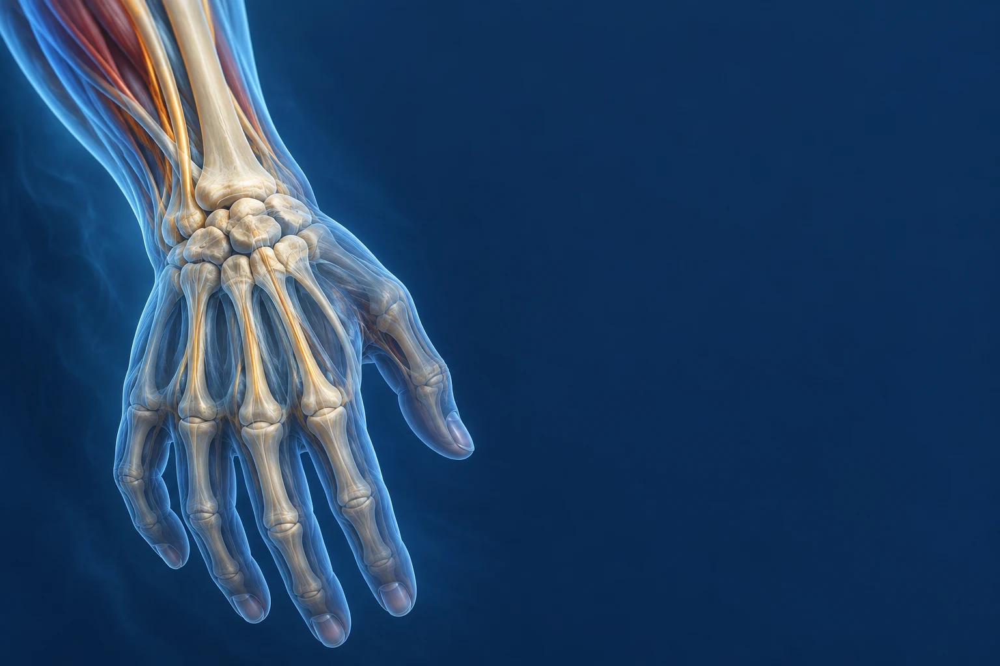
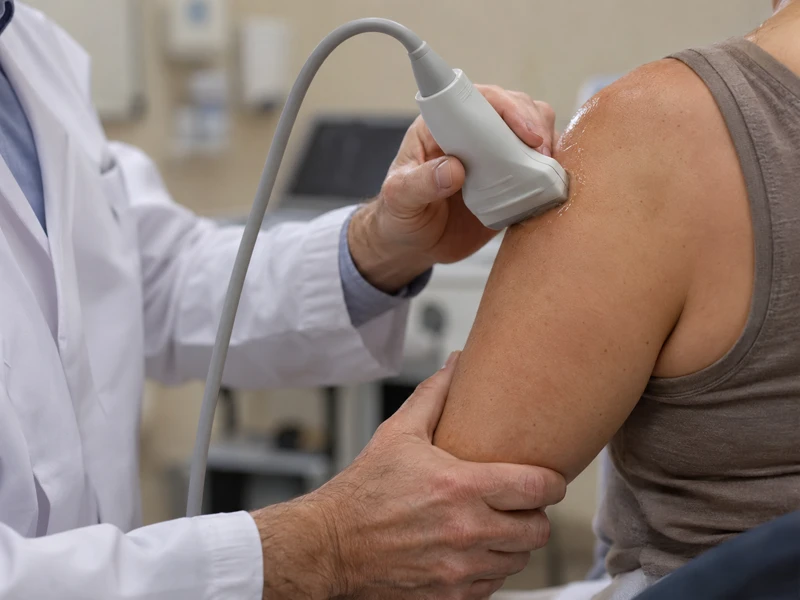
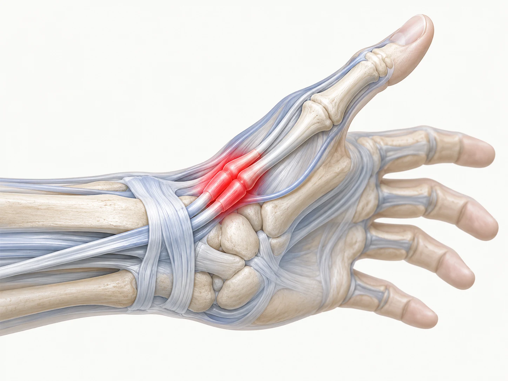
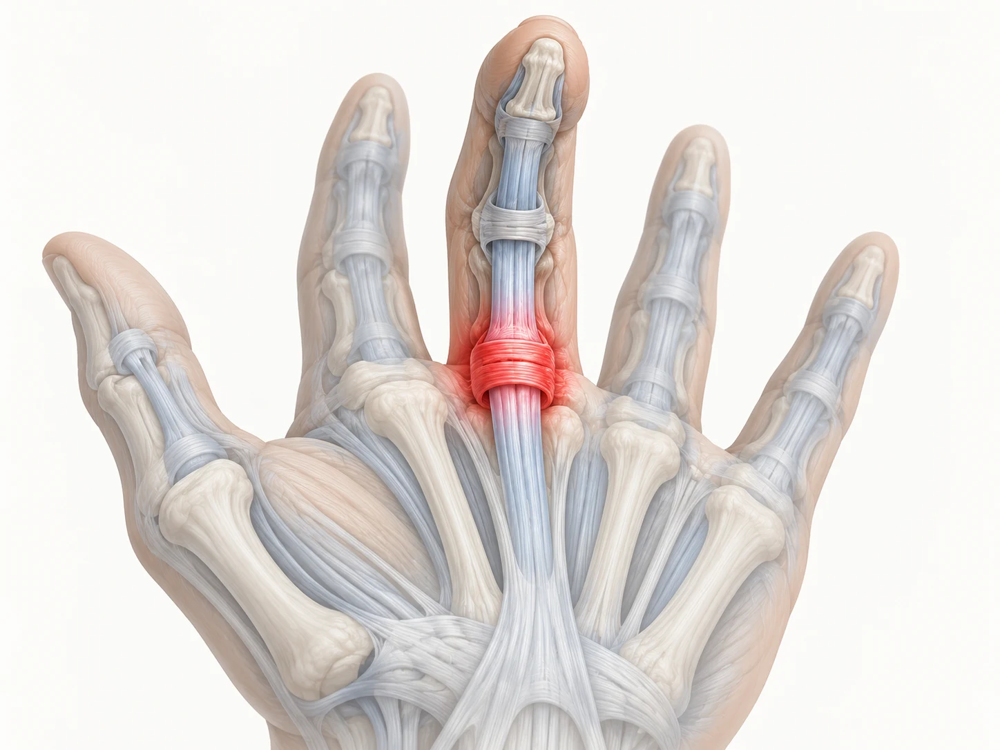
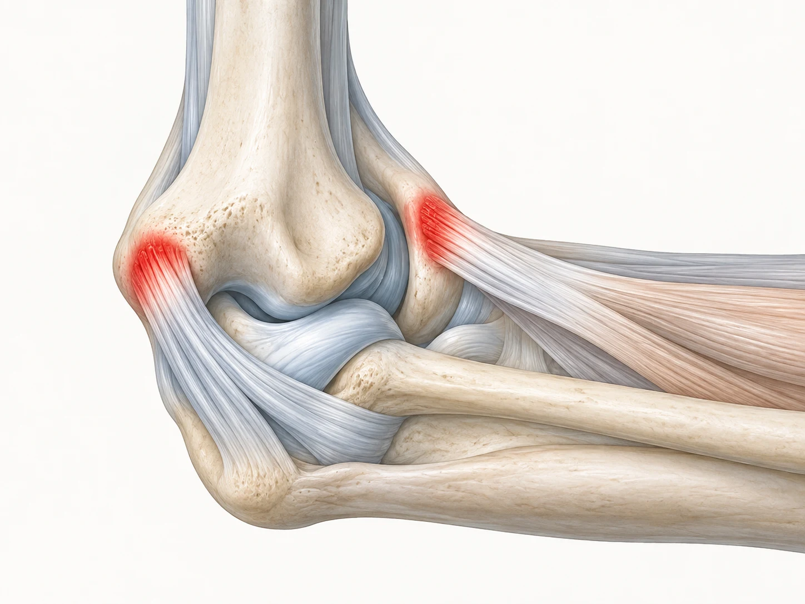

통증의 원인을 더 깊이 찾아가는 진료
”팔꿈치와 손의 통증은 반복적인 사용뿐 아니라 힘줄의 자극이나 신경 압박 등 여러 원인으로 나타날 수 있습니다.
물건을 쥐거나 손목을 돌릴 때의 통증, 손가락의 저림과 움직임 등을 함께
살펴봅니다.”
질환별 안내
ABOUT THE CONDITION
손목터널증후군(수근관 증후군)
손목의 좁은 통로인 수근관에서 정중신경이 눌려 발생하는 질환입니다.

손목터널증후군의 원인
손목을 반복해서 쓰거나 구부리는 동작은 손목 안쪽 신경에 부담을 줄 수 있습니다.
부종이나 전신 질환도 신경 압박과
관련됩니다.
장시간 컴퓨터, 스마트폰 사용

손목을 과도하게 구부리거나 비트는 반복 작업

손목 부위의 만성 염증이나 부종

임신, 당뇨, 갑상선 질환 등 전신적 요인

SYMPTOMS
손목터널증후군 대표 증상
- 01
엄지, 검지, 중지 손가락과 손바닥의 저림 및 통증
- 02
야간에 통증이 심해져 잠에서 깸
- 03
손에 힘이 들어가지 않고 물건을 자주 떨어뜨림
- 04
손가락 끝의 감각이 무뎌지거나 둔해짐
- 05
손목을 구부리고 있을 때 저린 증상 심화
손목터널증후군의 진단
통증이 나타나는 위치와 동작, 감각 변화와 힘줄·신경의 상태를 함께 살펴
필요한 검사와 치료 방향을 안내합니다.

문진·신체검진
통증이 시작된 시점과 양상, 병력과 생활 습관을 확인합니다. 압통과 움직임, 근력·감각 등을 함께 살펴 진단의 방향을 정합니다.

움직임·기능 평가
아픈 부위를 누르거나 움직일 때의 반응을 확인합니다. 관절의 움직임 범위와 근력, 일상 동작에서 나타나는 불편함을 함께 평가합니다.

초음파검사
초음파로 힘줄과 인대 등 연부 조직을 살펴봅니다. 통증 부위의 염증·부종이나 움직임에 따른 변화를 확인할 필요가 있을 때 활용합니다.
검사는 증상과 진찰 결과에 따라 필요한 항목을 선택합니다.
ABOUT THE CONDITION
손목건초염(드퀘르벵 증후군)
엄지 쪽 손목을 지나는 힘줄과 이를 둘러싼 통로가 자극받아 통증이 생기는 질환입니다.

손목건초염의 원인
육아와 가사 등 손목·엄지를 자주 사용하는 동작이 힘줄에 부담을 줄 수 있습니다.
임신·출산 전후의 신체 변화와 사용량
증가도
관련됩니다.
아기를 자주 안거나 씻기는 육아 동작
손목과 엄지를 반복해서 쓰는 가사·작업

엄지손가락을 반복해서 젖히는 운동

임신·출산 전후의 신체 변화와 손목 사용 증가
SYMPTOMS
손목건초염 대표 증상
- 01
엄지손가락을 구부리거나 손목을 꺾을 때 찌릿한 통증
- 02
엄지 밑 손목 부위를 누르면 강한 압통 발생
- 03
물건을 쥐거나 비틀기 어려움
- 04
손목 부위가 붓거나 열감이 느껴짐
- 05
손목을 움직일 때 걸리는 느낌이나 뚝 소리 발생
손목건초염의 진단
통증이 나타나는 위치와 동작, 감각 변화와 힘줄·신경의 상태를 함께 살펴
필요한 검사와 치료 방향을 안내합니다.
문진·신체검진
통증이 시작된 시점과 양상, 병력과 생활 습관을 확인합니다. 압통과 움직임, 근력·감각 등을 함께 살펴 진단의 방향을 정합니다.
움직임·기능 평가
아픈 부위를 누르거나 움직일 때의 반응을 확인합니다. 관절의 움직임 범위와 근력, 일상 동작에서 나타나는 불편함을 함께 평가합니다.
초음파검사
초음파로 힘줄과 인대 등 연부 조직을 살펴봅니다. 통증 부위의 염증·부종이나 움직임에 따른 변화를 확인할 필요가 있을 때 활용합니다.
검사는 증상과 진찰 결과에 따라 필요한 항목을 선택합니다.
ABOUT THE CONDITION
방아쇠수지
손가락을 굽히는 힘줄이 두꺼워지거나 힘줄을 잡아주는 통로가 좁아져 움직임이 걸리는 질환입니다.

방아쇠수지의 원인
손잡이를 강하게 쥐거나 손가락을 반복해서 쓰면 힘줄과 통로 사이에 마찰이 쌓일 수 있습니다.
당뇨 등 전신 질환도 영향을 줄
수
있습니다.

장시간 운전대, 골프채, 공구 등 손잡이를 꽉 쥐는 동작
손가락을 반복적으로 많이 사용하는 가사나 작업

손바닥 아래 힘줄 통로의 만성 염증 및 마찰
당뇨, 류마티스 등 전신 질환의 영향
SYMPTOMS
방아쇠수지 대표 증상
- 01
아침에 손가락이 뻣뻣하고 잘 펴지지 않음
- 02
손가락을 펼 때 '딸깍' 하는 소리와 함께 걸리는 느낌
- 03
손가락 마디 및 손바닥 아래 부위에 통증과 압통
- 04
손가락이 굽혀진 채로 잘 펴지지 않아 반대 손으로 펼쳐야 함
- 05
손바닥 쪽에 작은 결절(혹)이 만져지기도 함
방아쇠수지의 진단
통증이 나타나는 위치와 동작, 감각 변화와 힘줄·신경의 상태를 함께 살펴
필요한 검사와 치료 방향을 안내합니다.
문진·신체검진
통증이 시작된 시점과 양상, 병력과 생활 습관을 확인합니다. 압통과 움직임, 근력·감각 등을 함께 살펴 진단의 방향을 정합니다.
움직임·기능 평가
아픈 부위를 누르거나 움직일 때의 반응을 확인합니다. 관절의 움직임 범위와 근력, 일상 동작에서 나타나는 불편함을 함께 평가합니다.
초음파검사
초음파로 힘줄과 인대 등 연부 조직을 살펴봅니다. 통증 부위의 염증·부종이나 움직임에 따른 변화를 확인할 필요가 있을 때 활용합니다.
검사는 증상과 진찰 결과에 따라 필요한 항목을 선택합니다.
ABOUT THE CONDITION
테니스 엘보 / 골프 엘보
팔꿈치에 붙는 힘줄이 반복적인 부하로 손상되어 통증이 생기는 상태입니다.

테니스 엘보 / 골프 엘보의 원인
손목과 팔꿈치를 반복해서 사용하면 힘줄에 미세한 손상이 누적될 수 있습니다. 운동뿐 아니라 컴퓨터 작업이나 가사 활동에서도 부담이 생깁니다.

컴퓨터 키보드·마우스의 과도한 사용

골프·테니스 등 손목과 팔꿈치를 자주 쓰는 운동
가사 노동이나 무거운 물건을 자주 드는 작업

손목 및 팔 부위 근육의 과도한 긴장과 피로 누적
SYMPTOMS
테니스 엘보 / 골프 엘보 대표 증상
- 01
손목을 위로 젖히거나 안쪽으로 꺾을 때 팔꿈치 통증
- 02
문고리를 돌리거나 뚜껑을 열 때 힘이 빠짐
- 03
물건을 들 때 팔꿈치 외측 또는 내측에 강한 통증
- 04
팔꿈치 뼈 부근을 누르면 뚜렷한 압통 발생
- 05
통증이 아래팔 전체로 뻗쳐 나감
테니스 엘보 / 골프 엘보의 진단
통증이 나타나는 위치와 동작, 감각 변화와 힘줄·신경의 상태를 함께 살펴
필요한 검사와 치료 방향을 안내합니다.
문진·신체검진
통증이 시작된 시점과 양상, 병력과 생활 습관을 확인합니다. 압통과 움직임, 근력·감각 등을 함께 살펴 진단의 방향을 정합니다.
움직임·기능 평가
아픈 부위를 누르거나 움직일 때의 반응을 확인합니다. 관절의 움직임 범위와 근력, 일상 동작에서 나타나는 불편함을 함께 평가합니다.
초음파검사
초음파로 힘줄과 인대 등 연부 조직을 살펴봅니다. 통증 부위의 염증·부종이나 움직임에 따른 변화를 확인할 필요가 있을 때 활용합니다.
검사는 증상과 진찰 결과에 따라 필요한 항목을 선택합니다.
TREATMENT
회복을 위한 치료 프로그램
환자의 상태에 따라 필요한 치료를 판단합니다.